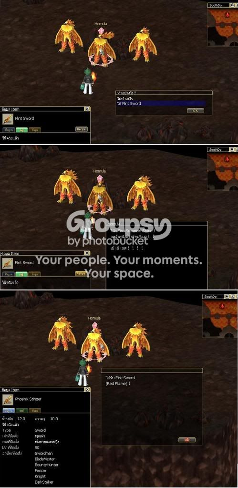

จะสามารถใช้งานได้ก็ต่อเมื่อ นำไปให้ NPC ทำการดึงพลังออกมา (พกติดตัวไว้ )
การที่จะไปหา npc ได้นั้น ต้องใช้ Fire wing (กดใช้) เพื่อไปหา npc
เพื่อทำการ เริ่มเควส และสิ่งของที่ต้องใช้อีกอย่างคือ Fire summon stone 100 ก้อน

2.Fire wing ที่ใช้ในการทำเควส มาริโอเนต Homula นั้น ซึ่งหลังจากที่ได้ทำการทดสอบ
ทำปรากฏว่า ยังเกิดปัญหาอยู่ครับ
ทางทีมงาน จะทำการสอบถามทางผู้พัฒนาอีกทาง นึงนะครับ
จึงแนะนำว่า ผู้ที่กำลังจะไปทำมาริโอเนต Homula นั้นตอนนี้ แนะนำให้หยุดทำไว้ก่อน
จนกว่าจะได้ข้อสรุปที่แน่นอนครับผม ต้องขออภัยไว้ ณ ที่นี้ด้วยนะครับ